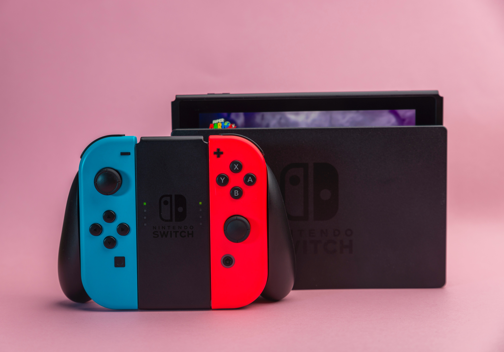

Pictures of my Nintendo Switch
Nintendo Switch pictures I found online

Hi, my names is Kal from California. I am currently trying to learn to code to get into the tech industry. In my downtime, I love to chill out and play video games, especially on my Nintendo Switch. I enjoy the peace and mundane grind of playing games where I can grind to level up building on my world and players while collecting. I think it can be challenging, but most of all relaxing and lets me escape the outside pressures of the real world.
For someone new to this world of video games, I think Nintendo is a perfect starter console. And the Nintendo Switch is a great hybrid of handheld or docked to your TV, so you can enjoy it at home or on the go. You should look for deals online to buy a system like this, you could even get a Lite version which is strictly handheld at a cheaper price. Then make sure to try some demos available on the e-shop to get a feel for some games. Buy a game or two to start out with in a genre you feel you would be most comfortable in getting to know. Time to learn how to play and enjoy it alone or with others.
You can play many games on your own, but you will find it's even more fun to play with family and friends, or others you could find online when you set up your online account and pay the annual online fee. Many resources online to help you get to know the system like Nintendo's Official Website. You can find helpful reviews and game guides on sites like IGN or on YouTube or Twitch there are many players showcasing games for you to check out and interact with the community. All you gotta do is search online and there are many games in each genre for you to enjoy.